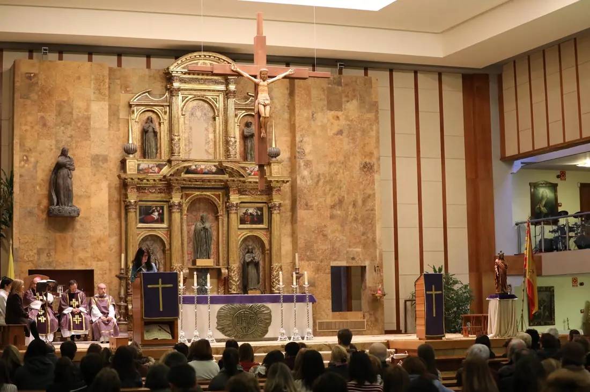
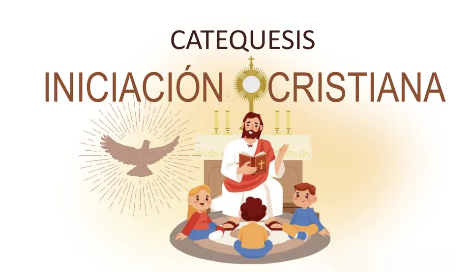
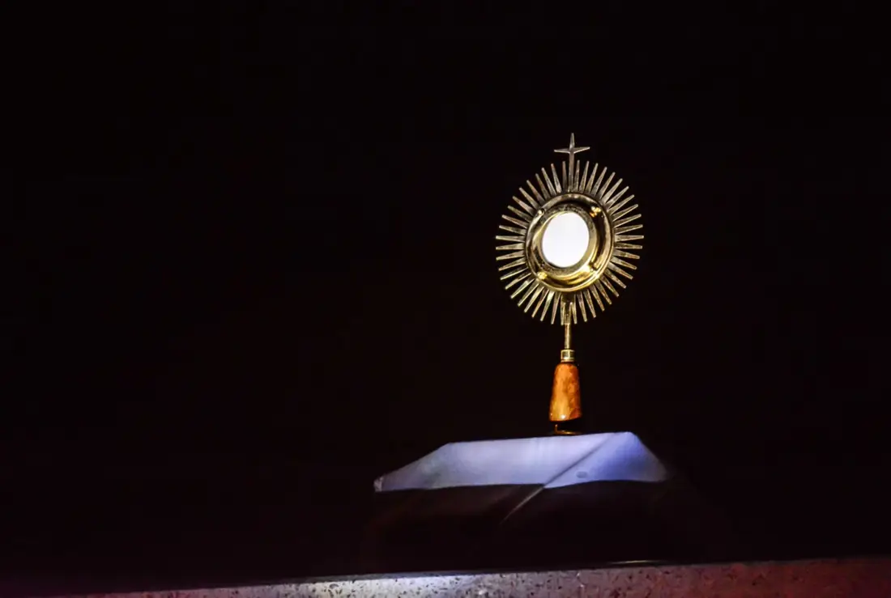
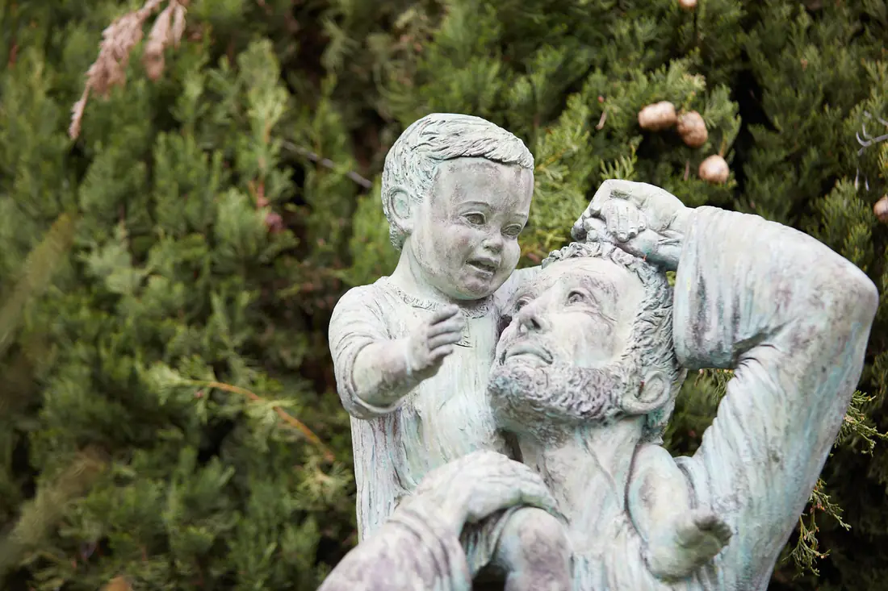
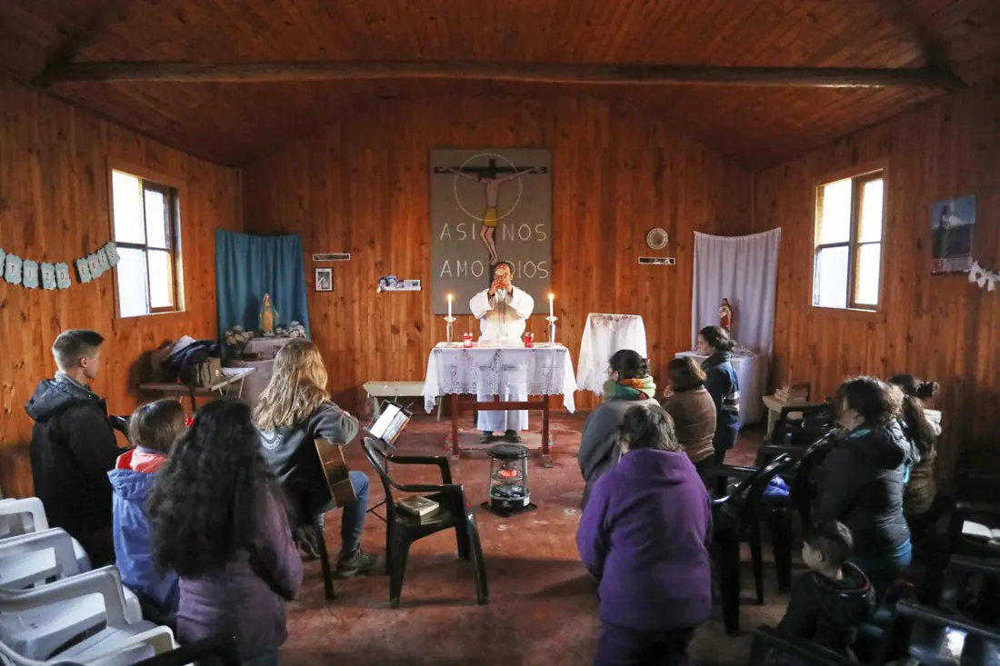

Diócesis de Getafe
Una casa abierta en Boadilla del Monte
Parroquia Santo Cristo de la Misericordia. Misa todos los días, adoración, catequesis y comunidad para cada edad.
¿Qué necesitas?
Lo más habitual, a un toque. Si no lo encuentras, llama a secretaría al +34 91 632 50 69, de lunes a viernes de 17:00 a 19:00.
- Bautizar a mi hijoCharlas previas y solicitud en secretaría
- Apuntar a catequesisComunión, LifeTeen y Light Up
- ConfesarmeMedia hora antes de cada misa
- CasarmeCursillos prematrimoniales y novios
- Comunión en casaPara enfermos y personas impedidas
- Pedir ayudaCáritas parroquial
- Hacer un retiroEmaús, Effetá, Bartimeo y más
- Echar una manoCatequista, voluntario o donante
Horarios de misa
Confesiones, rosario y adoraciónLunes a viernes
- Monasterio
- no en verano
Sábados
- Monasterio
- no en verano
Domingos y festivos
- Monasterio
- Misa de niños
- no en verano
Del 1 de julio al 7 de septiembre se suprimen las misas marcadas «no en verano». El monasterio es el del Santísimo Sacramento. En Navidad, Semana Santa y otras fechas el horario puede cambiar: consulta los avisos.
Avisos de la parroquia
Todos los avisos-

Inscripción LifeTeen 2026/27
-

Inscripciones Catequesis de Iniciación Cristiana 2026-2027
-

Horarios de Verano 2026
Recibe los avisos en el móvil.Unirme a la lista de WhatsApp
Próximas fechas
Retiros, cursillos y campamentos. Las fechas pasadas desaparecen solas.

-
Retiro Bartimeo
Del 11 al 13 de diciembre de 2026
-
Retiro Simeón y Ana
Del 16 al 17 de diciembre de 2026
-
Retiro Talitha Qumi
Del 29 al 31 de enero de 2027
-
Cursillo prematrimonial
Del 5 al 7 de febrero de 2027
-
Retiro de Emaús mujeres
Del 12 al 14 de marzo de 2027
-
Retiro Effetá
Del 19 al 21 de marzo de 2027
-
Cursillo prematrimonial
Del 9 al 11 de abril de 2027
-
Retiro Simeón y Ana
Del 17 al 18 de abril de 2027
-
Cursillo prematrimonial
Del 4 al 6 de junio de 2027
-
Campamento San Martín 1
Del 20 al 30 de junio de 2027
-
Campamento San Martín XL
Del 30 de junio al 11 de julio de 2027
-
Campamento San Martín XL2
Del 11 al 18 de julio de 2027
-
Peregrinación a Loyola
Del 12 al 19 de julio de 2027
-
Retiro de Emaús mujeres
Del 1 al 3 de octubre de 2027
-
Retiro de Emaús hombres
Del 22 al 24 de octubre de 2027
-
Retiro Bartimeo
Del 19 al 21 de noviembre de 2027
Una comunidad para cada edad
Ver todos los grupos
Niños
Iniciación Cristiana y Grupo Lázaro.

Jóvenes
LifeTeen, Light Up, Bartimeo, Effetá y Nicodemo.

Adultos y familias
Emaús, Acción Católica, matrimonios, novios y Cáritas.
 Campamentos 2027San Martín de Don y Loyola, del 20 de junio al 19 de julio. Requisitos y fechas para monitores.
Campamentos 2027San Martín de Don y Loyola, del 20 de junio al 19 de julio. Requisitos y fechas para monitores.

Sostén tu parroquia
La parroquia cubre sus propias necesidades y, por su vocación misionera, ayuda a otras personas y realidades.
- Transferencia
- ES65 0081 0640 6400 0252 3664
- Bizum
- 38375
Reza con nosotros
La meditación del día y las charlas, donde las escuches.
Seminario
En el seminario de Getafe hay 5 chicos de la parroquia. Acompáñalos con tu oración.
Columbarios
Un lugar de descanso en el patio de la Virgen María, junto a la comunidad que reza.